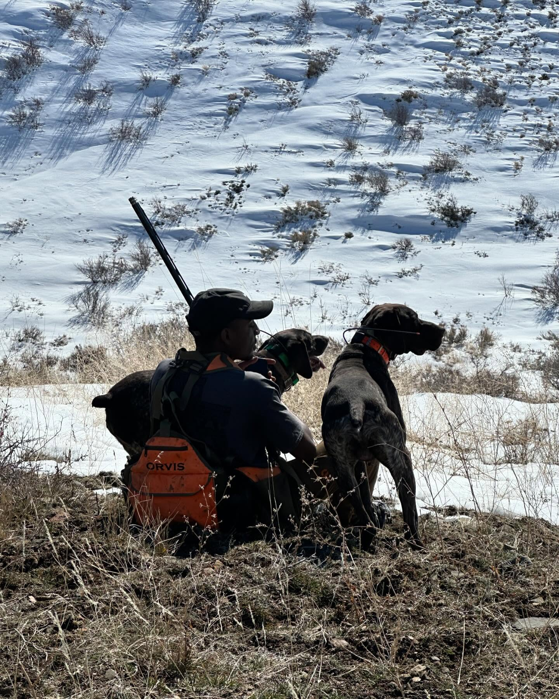

Episode 26 · April 19, 2024 · 4300
(EP:26) Justin Chapman: The love of Chukar and how to get into hunting this amazing bird!

About This Episode
In this episode I sit down with Chukar hunter Justin Chapman. We talk about everything from getting his first bird dogs to finding chukar on the western landscape. If you are an upland guy and want to hunt chukar or some tips on how to find the birds, this might be the episode for you. Thanks everyone for listening and hope you enjoy the show! For Kuranda dog beds, copy the link for purchase. This helps us out and we really appreciate it.
Questions about the training topics in this episode? Tyce works with bird dog owners and hunters through Utah Bird Dog Training. Reach out to work with him directly.
Resources & Links
- Kuranda Dog Beds — Elevated, chew-proof dog beds.
- Utah Bird Dog Training — Tyce's professional training services.
Transcript
Full transcript for Episode 26: (EP:26) Justin Chapman: The love of Chukar and how to get into hunting this amazing bird!.
Tyce
Hey everyone, welcome to the Bird Dog Podcast. I've got Justin Chapman on the show today. Justin moved to Utah from Missouri in 2020 and has become genuinely obsessed with chukar hunting. He hunts them multiple times a week through the season, has a deep understanding of western chukar country, and has two excellent German shorthairs — Duke and Dior — that he hunts hard. Justin, welcome to the show.
Justin
Thanks Tyce, glad to be here. Yeah, I came from a background of pheasants and quail in Kansas and Missouri — bow hunting was my main thing — but when I moved out to Utah and chased my first chukar, that all kind of shifted. I went out six or seven days in a row before I ever saw a bird. Didn't know what I was doing, didn't know what to look for. Then a couple of guys on a job site I was working who knew the area took me out on the last day of that season. A dog went on point and I shot my first chukar on the way back down the mountain. Just the scenery, the country — I was hooked. I don't think anything else has grabbed me the same way since.
Tyce
For someone who wants to get into chukar hunting and doesn't know where to start — what do you tell them?
Justin
First: watch YouTube. Guys like Eric Foster will show you what the terrain looks like — the steep, rocky, sage and grass mix, the cliff-face habitat. Study what you're looking for before you go looking for it. Then get on Google Earth or OnX and look for areas that have burned in the last three to five years. After a fire, that country comes back healthy — the grass, the cover, everything. You'll see black or brownish scar lines on the satellite view. If those areas have recovered, they hold birds. Look for gold or tan patches of grass at elevation, with rocks and rugged terrain. That's chukar country.
Early season — September, early October — find water. In the west desert of Utah there's no running water, so you're looking for guzzlers. The problem is there are no public guzzler maps in Utah. It's who-you-know information. If you're connected with local hunters or biologists, they can point you in a direction. But if water's available, birds will be near it every time until the rains come. Once you get that first rain or snow in late October or November, the birds spread out and hunting gets easier. That's when I think the best hunting happens.
As far as where to find birds: Idaho is consistently excellent, especially the Snake River country on the west side. If you're willing to drive eight to ten hours from Utah, I'd push past Utah and go to Idaho or Nevada. Nevada is well-known for chukar. Utah has birds in pockets — you can find them, but it takes more time to figure out. I spent a full year learning Utah before I really found consistent spots. Idaho, you can go to new country and find birds much more quickly.
Tyce
Talk about the dogs you run and what you look for in a pointing breed for chukar.
Justin
Duke and Dior are German shorthairs. I'll be honest — I didn't know a ton about bloodlines when I got them. Duke was from an accidental breeding and cost me $350. He turned into a great dog. What I've found with shorthairs is they're just built to do this. The genetics are so ingrained after so many generations of bird hunting that almost every shorthair is going to find birds and point them. Tyce always says the biggest variable he sees in shorthairs is retrieve desire — some are natural retrievers, some you have to work it into them. If I were picking a puppy, I'd look for one that shows natural retrieve interest early. It just makes everything downstream in training easier.
Tyce
Any other tips for chukar newcomers?
Justin
Just go. Worst case you get a workout and a view — chukar country is always beautiful. Once you find a spot with birds, mark it and come back. Once you understand what the habitat looks like, you can start reading new country from a map and make educated guesses. Talk to other hunters. Most chukar hunters are willing to help you get started even if they're not going to hand you their specific spots. The community is pretty solid that way. And don't get discouraged by early trips that produce nothing. That's part of it. The day you finally break that covey and the birds flush off the cliff face in front of your dog — that's why people do this for life. Thanks for having me on, Tyce.
Tyce
Justin, great to have you on. We've hunted chukar together and I can tell you this guy is the real deal. Thanks for coming on and sharing your knowledge.
About the Host
Tyce Erickson
Tyce Erickson is a professional bird dog trainer and the owner of Utah Bird Dog Training in Utah. For nearly two decades he has worked with pointing dogs, retrievers, and family hunting dogs — helping owners build dogs that are capable and enjoyable in the field. The Bird Dog Podcast is an extension of that work: honest conversations on training, hunting, breeding, and everything that goes into a life spent working dogs.
More About Tyce